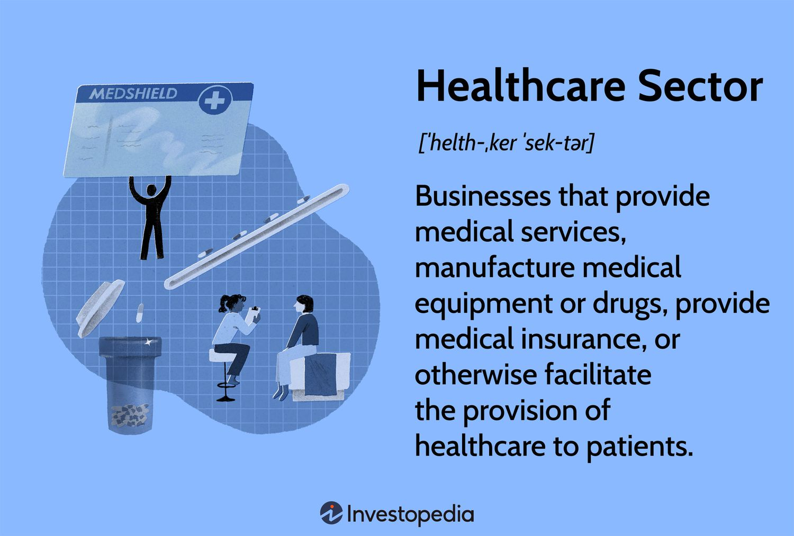

Real-World Applications
Discover how ontology learning is transforming various domains

Healthcare & Biomedicine
Automated extraction of medical knowledge to build comprehensive biomedical ontologies for disease classification, drug discovery, and clinical decision support.

E-commerce & Recommendation
Building product ontologies to enhance search capabilities and provide personalized recommendations based on semantic understanding of user preferences.

Enterprise Knowledge Management
Organizing corporate knowledge into structured ontologies to improve information retrieval, collaboration, and decision-making processes.